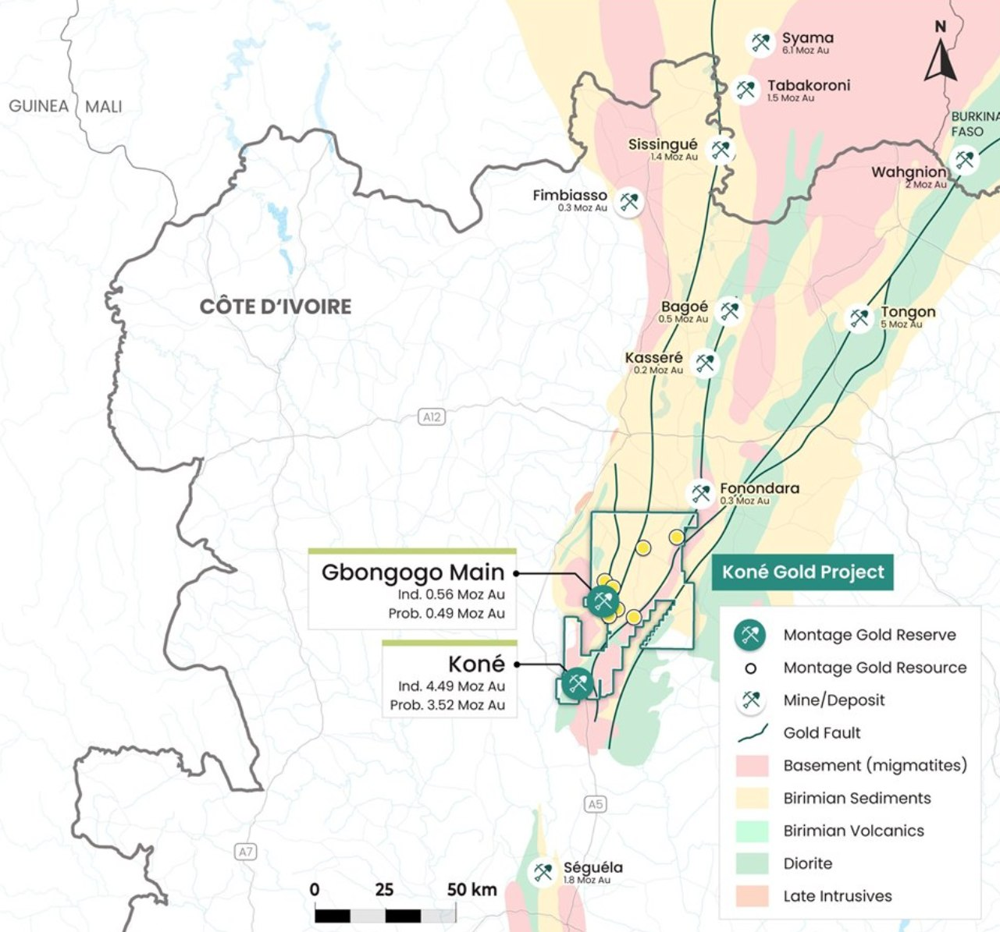
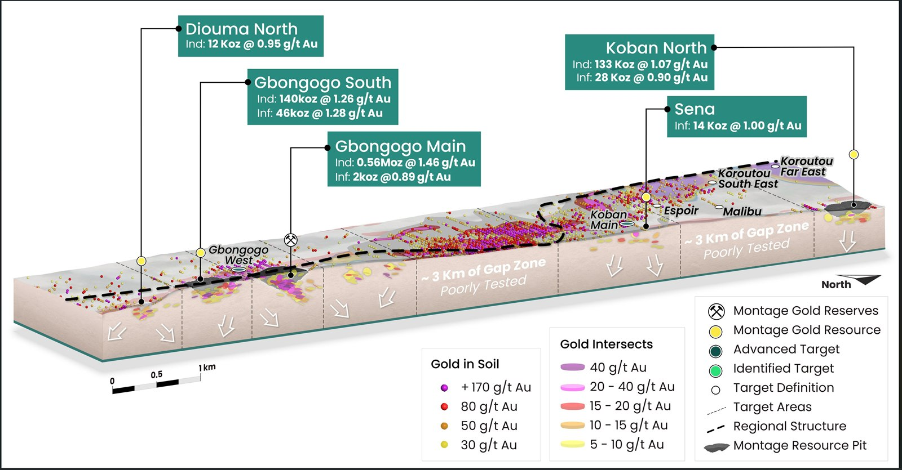
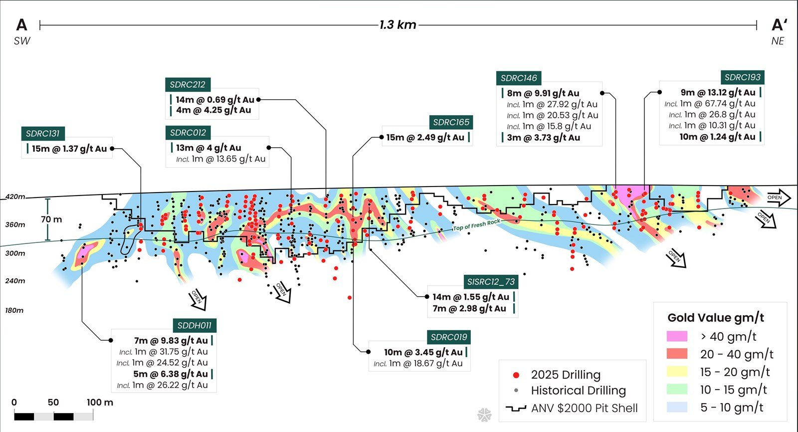
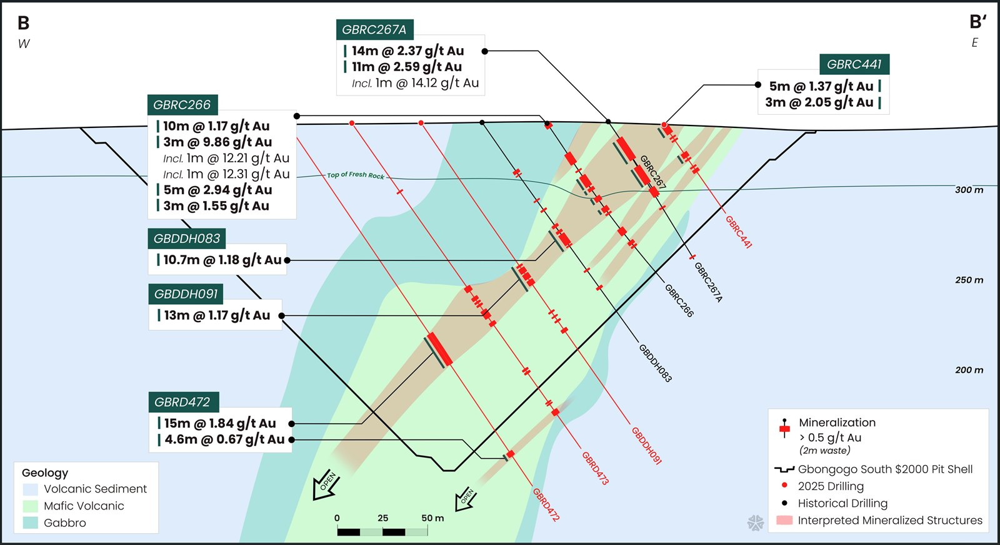

Koné Gold Project · Côte d’Ivoire
How clear investor cartography helped a technically strong gold developer communicate its scale. Over the same period the company grew into a billion-dollar developer (company-reported).
Investor maps for every resource update, corporate presentations, news-release graphics, and roadshow decks — one visual language carried from first inferred ounces through each expansion.
Project financing
- Wheaton Precious Metals stream
- Zijin Mining stream
Private placement, 2024
Measured & indicated resource
Company-reported market capitalisation grew from ~$130M (2023) to ~$8.0B today. Figures are company-reported, drawn from the company’s public disclosure (SEDAR+); shown for context, not a claim of attribution.

Project location — Côte d’Ivoire.
A large-scale gold developer in West Africa.
Koné is a large-scale, near-surface open-pit opportunity with a measured & indicated resource of 4M+ ounces — with access to power, water, and transport, designed as a low-cost, long-life operation.
The project covers 2,259 km² across the Koné and Gbongogo permits, backed by 100,000+ metres of drilling plus airborne geophysics, soil geochemistry, and 3D resource models.
Precise for geologists. Opaque for investors.
Their maps were technically precise but visually complex — drilling density, resource outlines, and geophysical layers presented for geologists, not investors. Palettes, legends, and annotation varied across maps, decks, and news releases, weakening the corporate identity.
Investors understood Koné’s fundamentals but couldn’t grasp its true scale and continuity. Feedback called the materials “too dense and overly technical.”
In a crowded West African gold market — peers like Endeavour Mining, Tietto Minerals, and Roxgold — Montage needed clear, investor-focused visuals.

Regional geology & gold endowment — the Birimian belt, Côte d’Ivoire.
One visual standard, scalable everywhere.
Discovery & audit
Reviewed every geological dataset, GIS file, and existing map — surfacing gaps, redundancies, and inconsistencies in colour, scale, and symbology.
Strategy & design plan
Pinned the story to the key datasets — drill traces, pit shells, resource outlines, lithology, geophysics — then built one cartographic framework on Montage’s style guide, scalable across every channel.
Execution
Produced a full suite of investor-grade maps — regional and competitor, location and infrastructure, deposit and resource, drill-plan and cross-section — each held to one visual standard.
Collaboration & iteration
Worked hand-in-hand with Montage’s GIS and management teams — cross-checked against the latest interpretations, with fast Zoom reviews and internal QA at every stage.
One program, every audience.
From West African context down to the drill section — the full suite of investor maps produced for Montage Gold, every sheet held to one corporate standard so scale, grade, and continuity read at a glance.
70+ investor maps 25+ news releases 2023–2026

3D resource block model.

Long section through the deposit — 1.3 km, grade-shaded.

Gbongogo South — cross-section & intercepts.
Scale, read at a glance.
The new map suite let investors grasp scale, resource growth, and regional positioning at a glance.
Over the same period the company reported a C$180M private placement and a US$825M project financing with Zijin Mining and Wheaton Precious Metals — one of West Africa’s largest gold development financings (company-reported).
~US$1B raised since 2023 incl. the US$825M Koné construction package
When scale, grade, and continuity read at a glance, an investor can finally weigh what the deposit is worth. — Exploration Sites
Let the market see your deposit the way you do.
As the deposit grew and the team evolved, strategic cartography helped Montage tell a sharper story. Over the same period the company grew into a billion-dollar developer (company-reported). The rocks did the work — clear maps let the market see it.
Project figures — mineral resource, drilling, and financings — are as reported by Montage Gold Corp. in its public disclosure; refer to the company’s filings on SEDAR+ and its NI 43-101 technical report for complete information. Market-capitalisation figures are approximate and shown for context only. Exploration Sites provides communications and visualisation services and makes no representation regarding the company’s securities or performance. Past performance is not indicative of future results.